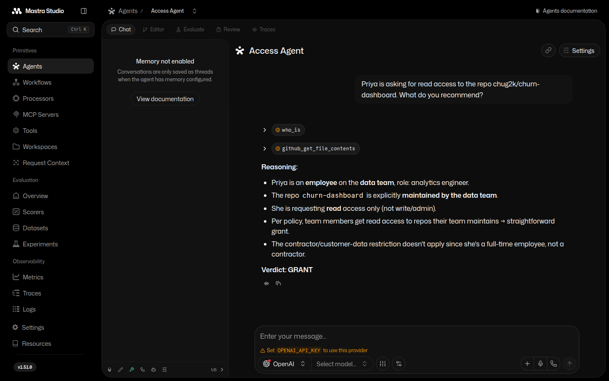

Anduin's builder curriculum, one ascent in three stages: learn to ship with AI (Vibe Coding), master the durable skills underneath (Skills Series), then build agents that act on your systems (Agents). Start where you are.
Continue the Agents trail →One agent, two systems, a policy. It asks HR who's requesting (who_is),
reads the repo on GitHub, joins the two against the access policy — and recommends.
Watch it think in Studio.

You can ship — now go deeper. Self-contained topics on the durable skills underneath the vibe. Take them in any order.
The summit: software that acts. From "what even is an agent" to one that reads your systems, weighs a policy, and makes a call.